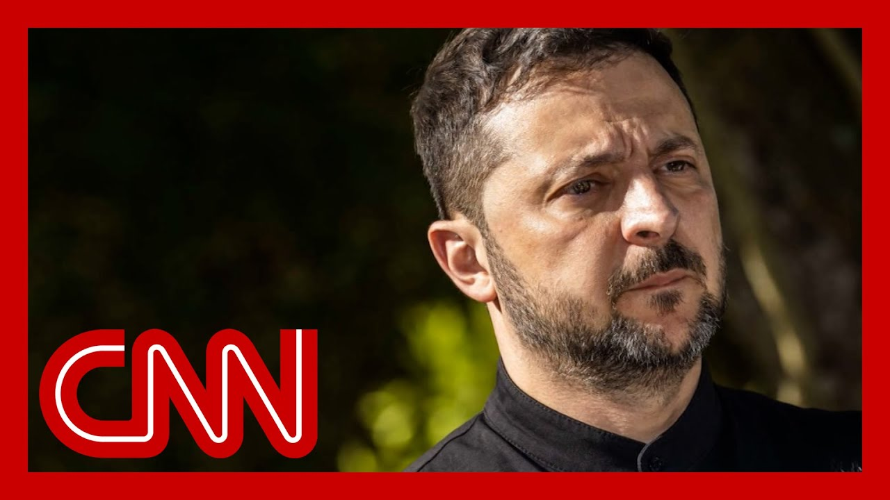

【CNN News 202507012 泽连斯基：美国军事物资交付已“恢复”】
Summary: The Hill reports Republican senators questioning Defense Secretary Pete Hegseth after CNN revealed he paused U.S. weapon shipments to Ukraine without informing the White House, while Ukrainian President Zelensky confirmed deliveries resumed today. Russia intensified attacks, striking a Kharkiv maternity hospital, forcing a newborn's family to flee. David Shimer, former Biden NSC director, discusses evolving Russian drone tactics, U.S. aid delays, and Ukraine's drone innovation. Trump's shifting stance on Putin and potential NATO weapon transfers are also analyzed.
摘要： 《国会山报》报道，共和党参议员就国防部长皮特·赫格塞暂停对乌武器运输未通报白宫一事提出质询，而乌总统泽连斯基证实交付今日恢复。俄军加强空袭，袭击哈尔科夫妇产医院，新生儿家庭被迫逃亡。前拜登政府国安会官员大卫·希默解析俄军无人机战术演变、美援延迟及乌方无人机技术突破。报道同时探讨特朗普对普京态度转变及北约武器转让可能性。

⏱️ Estimated Reading Time: 15 min
📚 四级生词 📚 六级生词 📚 雅思生词 📚 托福生词 📚 专八生词 📚 SAT生词 📚 考研生词 📚 GRE生词 📚 高考生词 📚 其它生词生词
The Hill reports that Republican senators are questioning Defense Secretary Pete Hegseth.
《国会山报》报道，共和党参议员正在质询国防部长皮特·赫格塞。
After CNN reported that he paused U.S. weapon shipments to Ukraine without informing the White House.
此前CNN披露他在未告知白宫的情况下暂停了对乌克兰的武器运输。
Meanwhile, Ukrainian President Volodymyr Zelensky confirmed that military deliveries to Ukraine started back up today.
与此同时，乌克兰总统泽连斯基证实军事物资交付已于今日恢复。
Overnight, Russia struck a maternity hospital in Kharkiv, Ukraine, part of its intensified aerial assault on Ukraine.
昨夜，俄军袭击了乌克兰哈尔科夫一家妇产医院，这是其对乌加强空袭的一部分。
One father of a newborn says that hospital windows shattered after the first blast.
一名新生儿父亲称首次爆炸后医院窗户全部震碎。
As the second hit, he rushed his wife and baby to a shelter for safety.
第二次袭击时，他带着妻儿紧急躲进避难所。
Joining us now is David Shimer.
现在连线大卫·希默。
He served on President Biden's National Security Council as the director for Russia.
他曾任拜登总统国安会的俄罗斯事务主任。
Thanks so much for being with us.
感谢您的参与。
CNN crews on the ground in Kyiv have been witnessing this new Russian tactic.
CNN驻基辅团队目睹了俄军这种新战术。
Russian drones attacking from all directions, some bypassing the city, circling back to inflict even more damage.
俄军无人机从多方向进攻，部分绕过城市后折返造成更大破坏。
How can Ukraine correct for this?
乌克兰如何应对？
How can they address this?
他们有何对策？
Russia is continually evolving its offensive tactics through missiles and drones.
俄罗斯正通过导弹和无人机持续升级进攻战术。
To get around Ukrainian air defenses and incur damage.
旨在突破乌防空系统并造成破坏。
Putin does not intend to stop this war.
普京无意结束这场战争。
He will not agree to a ceasefire.
他不会同意停火。
He thinks he can wear down resolve and air defenses.
他认为能消耗对方意志与防空力量。
And wait out declining U.S. aid.
同时等待美国援助减少。
Ukraine needs kit to defeat Russia's drone and missile tactics.
乌克兰需要装备来对抗俄军无人机导弹战术。
It also needs sustained support and more equipment.
还需持续支援和更多装备。
To defend their cities over time.
以长期保卫城市。
The reversal of the pause only releases previously authorized aid.
暂停令解除仅释放了已批准的援助。
Biden approved a $1.25 billion package last December.
拜登去年12月批准了12.5亿美元援助。
That was never supposed to last beyond summer.
这批援助原计划仅维持到今夏。
And so we are now at a point where the question is not whether the pause will be lifted which is a good thing, but rather whether new a new equipment will be approved which is much more necessary, urgent and timely.
现在我们已不再讨论暂停是否解除（这是好事），而是更紧迫、必要且及时的新装备能否获批。
And so I hope and believe that this administration should authorize new assistance for Ukr through the use of drawdown, as well as by allowing European to buy from our own stocks.
因此我希望并相信本届政府应通过动用储备和允许欧洲从美国库存采购，授权对乌新援助。
So you and Jon Finer, who was the principal deputy national security adviser under Biden, wrote an article in Foreign Affairs magazine about Ukraine's drone revolution.
您与拜登时期的副国家安全顾问乔恩·芬纳在《外交事务》杂志上撰文探讨乌克兰的无人机革命。
You say in part, quote, most countries in the world, including the United States, are behind the Ukrainians in this re
文中提到：“包括美国在内，全球多数国家在此领域落后于乌克兰”。
Neither the US military nor any European military can produce mass quantities of such low cost and adaptable capabilit
美军或欧洲军队均无法大规模生产此类低成本、适应性强的装备。
Now, on Thursday, the Secretary of Defense, Hegseth announced that he would rescind what he calls restrictive polici that stall production of drones in the United States.
周四，国防部长赫格塞思宣布将废除他口中阻碍美国无人机生产的限制政策。
He had this a highly produced vi on the Pentagon's lawn that was later deleted.
他在五角大楼草坪上发布了一段精心制作的视频，后被删除。
Do you think that removing the red tape could help in what It sounds like you and Hegseth a needs to happen when it comes to the U.S., improving its drone manufacturin
您认为简化流程能否推动美国无人机制造升级？这似乎与赫格塞思的诉求一致。
So there's a massive opportunity in Ukraine's drone industry, which the US helped over the course of 22, 23 and 24 to stand up and fund, which is now the most innovative drone industry in the world.
乌克兰无人机产业存在巨大机遇，美国在22至24年间协助其建立并资助，现已成为全球最具创新性。
Ukraine is able to produce milli of autonomous systems per year and low cost adaptively and inno
乌克兰每年可生产数百万低成本、自适应且创新的自主系统。
and we should view our partnersh with Ukraine in part as an oppor to learn from their technology, to use it to strengthen our own national security and in the process, both benefit but also benefit ourselves.
我们应将对乌合作视为学习其技术以增强自身国家安全的机会，实现互利共赢。
President Trump recently struck a different tone. when it comes to Vladimir Putin. listen to him.
特朗普总统近期对普京的语调有所改变。听听他的说法。
Earlier this week. We get a lot of bullshit thrown by Putin. If you want to know the truth. He's very nice all the time, but it turns out to be meaningle
本周早些时候：“普京满嘴胡言。说穿了，他的友善毫无意义。”
I imagine that you thought. Yeah. Of course. but do you think Trump is ready to take a different tack with hi
您可能觉得理所当然，但您认为特朗普准备好改变策略了吗？
you know, a curse word at a cabinet meeting? Do you think he's ready to? I mean, obviously, they unpaused
比如在内阁会议上爆粗口？您认为他准备好了吗？毕竟援助已恢复。
Do you think maybe he's willing to actually realize what the threat is from Putin and the fact that Putin doesn't want peace, he wants Ukr
您认为他是否真正意识到普京的威胁及其对乌克兰的野心？
I hope he is. And I would say that the best wa to get to President Trump's objective of a ceasefire is to adjust Putin's calculus, to believe the time is not, in fact, on his side in this war
希望如此。实现特朗普停火目标的最佳方式是让普京明白时间不在他这边。
And there are three ways to do t all of which, in my view, should
我认为可通过三种方式实现：
The first is to authorize additional weapons flows to Ukra through the use of drawdown auth as well as by selling stocks to European allies.
一是通过动用储备和向欧洲盟友出售库存，授权更多武器援乌。
The second is to intensify sanct against Russia to energy sector, which will make it more challenging for Russia and for Putin to sustain his war machine over time.
二是加强对俄能源制裁，削弱其长期维持战争的能力。
And the third is that the United States should request of European, governments to actually seize the immobilized sovereign assets, $300 billion of immobili Russian sovereign assets inside that can be used to finance supp for Ukraine for the long term, which would send an unmistakable to Putin that support for Ukraine will not dry up and that he should negotiate in a meaningful way, which to this point he's been unwilling to do.
三是要求欧洲政府没收300亿美元被冻结俄主权资产，用于长期援乌，明确向普京表明支持不会枯竭，必须认真谈判——而他至今拒绝如此。
David Shimer, thank you so much. once again, we extend, an invitation to the white House and National Advisor Marco Rubio to come on the show and talk about the strategy here.
感谢大卫·希默。我们再次邀请白宫及国家安全顾问马可·卢比奥探讨相关战略。
We got a lot of bullshit thrown By who? You want to know the. It's very nice all the time, Just killing too many people.
“谁在胡扯？表面友善，实则滥杀无辜。”
So we're sending some defensive weapons to Ukrain And I have approved that.
“因此我们向乌克兰提供防御性武器，我已批准。”
So that surprise announcement came earlier this week. Now we know a little bit about what he approved.
这一意外声明于本周早些时候发布，现已知部分批准内容。
In an interview with NBC news, President Trump said this, quote we're sending weapons to NATO, a is paying for those weapons 100% We're going to be sending patriots to NATO, and then NATO will distribute that, presumably Patriot missile
特朗普接受NBC采访时称：“我们向北约提供武器，北约100%支付费用。将提供‘爱国者’导弹由北约分配。”
He also said he was disappointed in Russia and teased that he would make a major statement on Monday.
他还表示对俄罗斯失望，并预告周一将发表重大声明。
Joining our panel is Jill Dougherty, CNN's former Mos bureau chief and the author of the new book, My Russia What I Saw Inside the Kremlin. Jill, thanks so much for being h
嘉宾吉尔·多尔蒂是CNN前莫斯科分社社长，新书《我的俄罗斯：克里姆林宫见闻》作者。感谢参与。
so let's start with kind of what this mea Big picture. You, of course, also have, the sanctions, situation working its way through Congress but does this actually seem like a situation where the president has shifted more aggressively in opposition to Vladimir Putin is actually realizing that it's not working? or not?
从大局看，尽管制裁法案仍在国会推进，但这是否意味着总统已更强烈反对普京，意识到原有策略无效？
Yeah. I mean, it's hard to obviously jump into his head and know exactly what he's thinking that that is.
确实难以揣测其真实想法。
But if you judge by what the president has said, he is angry at Putin, or at least he is disappointed and he's used profanity to make that point.
但从其言论看，他对普京愤怒或失望，甚至用粗话强调。
So what he said is that they are the U.S. will be providing defensive weap And now we get the hint in that NBC interview about what he might talk about o
他提到将提供防御性武器，NBC采访暗示了更多细节。
So what did he say? Okay. United States sells weapons or gives weapons in some fashion and NATO pays for it.
具体而言：美国以某种方式提供武器，北约支付费用。
But I think there are a lot of q You know, NATO doesn't buy weapo The countries that are members of NATO buy wea and the United States is part of
但存在疑问：北约不直接采购武器，成员国才采购，而美国是北约成员。
So does that mean that the Unite is going to chip in on this? Do you see where I'm going? I mean, if it's 100% NATO, U.S. is part of NATO. Does the U.S. pay?
这是否意味着美国也需出资？若北约100%支付，美国作为成员是否分摊？
this may be clarified, but I think the imprecision that the president often uses and things like this is confusin
可能后续澄清，但总统惯常的模糊表述易引发困惑。
So, but I do think overall, you have the president of the United Stat increasingly showing that he is frustrated with Putin and that he wants to provide some type of help militarily, to
总体看，总统愈发显露对普京的不满，并希望提供军事援助。
Joe, when when Trump says that things are going to be happ toward Russia, which is a very vague statement. I mean, what do you think the Kremlin hears when he says t
乔，当特朗普含糊其辞称“将对俄采取行动”时，您认为克里姆林宫作何解读？
Well, if you judge by the spokesperson for President Putin, they say, you know, they were kind of reacting first to the profanity a few day
从普京发言人反应看，他们最初关注的是几日前的粗话。
But essentially what they're say there's a lot of stuff out there And in fact, the foreign minister talked abou you know, fake news, etc.. So I think they look at what Tru
俄外长称之为“假新闻”等，他们分析特朗普言论时——
Obviously, they analyze it very But as I was saying, Mr. Trump is not a precise, legalistic speaker. So the Kremlin has to take that and then look at what concretely the United States is doing.
但特朗普并非严谨的法律术语使用者，因此克里姆林宫需结合美国具体行动判断。
And there are these two things w and then sanctions, because you also have Lindsey Graham's bill up on Capitol Hill moving forward. It was kind of stuck for a while
此外还有制裁——林赛·格雷厄姆的提案曾在国会停滞，现正推进。
And those sanctions could be quite strong against, other countries like India etc., who trade with your buy oil from
这些制裁可能严厉波及印度等与俄石油贸易的国家。
So we'll have to see, concretely what happens and what is released on Monday.
需观察周一具体声明及后续发展。
so Tyler Pager, you and your coauthors obtained, Trump at a fundraiser. Is that audio of him speaking at a fundraiser about M
泰勒·佩杰，您与合著者获得了特朗普在筹款活动上谈论莫斯科的录音？
I want to play a little bit of t for our audience and ask you abo Let's watch the nation. If you go in to Ukraine, I'm don't have that. I'm telling you, I had no choice
请播放片段：“若入侵乌克兰…我别无选择。”
Republicans of the public. So it doesn't like I don't belie I said you said no way. And I said way. And then he does like, I don't believe you. But the truth is, you believe me 10%. And I told you there's people in
“共和党人不信，我说‘没门’，他反问‘真的？’其实他们只信10%。我警告过内部有人…”
So is the president saying there that is he basically taking cred for Putin not invading Ukraine until he was no longer in office I mean, what do you make of that
这是否在标榜自己任内阻止了普京侵乌？您怎么看？
Yeah, I think it's part of his e that Putin would not have invade Ukraine had he been president.
是的，这符合其叙事——若他在任普京不敢侵乌。
It's unclear the veracity of what he's saying whether he did actually say that or is just bragging about it to
无法核实他是否真如此警告，或仅为吹嘘。
But it's part of his larger attitude toward foreign policy, where he feels that, you know, he can control what other people and he just needs to, you know, sort of issue these bellicose th
这反映其外交政策观：认为能威慑他国，只需发表强硬言论。
We've seen him do that in office now, and it's interesting to see how his relationship with particularly has changed over the last several months, as he feels like he has not solved this war that he promised to sol within 24 hours on the campaign
他在任期间如此行事，有趣的是近月其与俄关系变化——他未能兑现“24小时解决战争”的竞选承诺。